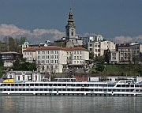
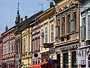
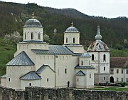

Serbia :: A Closer Look
|  |
BelgradeThere's more to Belgrade than nightlife, you know. This article points out the highlights of the city, with suggested excursions in the surrounding area. |
|  |
VojvodinaFind out more about Novi Sad, the cosmopolitan capital of Vojvodina, nearby Sremski Karlovci, and other places to visit in Vojvodina. |
|  |
Southwestern SerbiaMany travellers pass quickly through the rolling hills between Belgrade and Montenegro, but for those with more time there are plenty of interesting places to be discovered. |
The Cyrillic Alphabet in the BalkansIf you are going to travel through Serbia, especially by public transport, it helps to be able to read the Cyrillic Alphabet. This page has a table of Cyrillic characters and their equivalents in the Latin alphabet. |